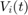

Práctica 4: Señales en tiempo discreto
Contents
Integrantes
Portillo Martínez Arturo
Objetivos
- Conocer los conceptos de respuesta en frecuencia.
- Conocer los conceptos de filtros.
- Realizar graficas de Bode (manual y con MATLAB).
- Realizar simulaciones numéricas de sistemas con MATLAB.
Introducción
4.10 Diseño de filtro por colocación de polos y ceros de
La respuesta de la frecuencia de un sistema, que describe su capacidad de filtrado, depende de los polos y ceros de su función de transferencia .
Esta función puede expresarse en términos de sus polos y ceros . La magnitud y el ángulo de en una frecuencia específica se calculan usando las distancias y ángulos de los ceros y polos a ese punto en el plano complejo. La magnitud de es el producto de las distancias de los ceros a dividido por el producto de las distancias de los polos a . El ángulo de es la suma de los ángulos de los ceros a menos la suma de los ángulos de los polos a . Este método se aplica para calcular la respuesta den frecuencia a lo largo del eje imaginario, repitiendo el procedimiento para todos los valores de .
AUMENTO DE GANANCIA POR UN POLO
La ubicación de un polo complejo afecta la respuesta en frecuencia de un sistema. A medida que la frecuencia se aproxima a la respuesta en amplitud aumenta,alcanzando un máximo en , y luego disminuye. Esto crea un comportamiento resonante, donde la ganancia es la máxima en . Cuanto más cerca esté el polo del eje imaginario, mayor será la resonancia. En sistemas reales, cada polo commplejo debe tener su conjugado, lo que no afecta significativamente la selectividad en frecuencia cerca de . Para estabilidad, los polos deben ubicarse en el semiplano izquierdo.
La presencia de polos complejos y sus conjugados afecta la respuesta en frecuencia de un sistema. La ganancia se define como , donde es la distancia al polo y es la distancia al polo conjugado. Aunque el polo original afecta significativamente la ganancia cerca de , el polo conjugado, que está más lejos de , no cambia drásticamente la longitud y, por lo tanto, la selectividad en frecuencia permanece prácticamente sin cambios con solo aumentos graduales en a medida que crece.
SUPRESIÓN DE GANANCIA POR UN CERO
La ubicación de ceros complejos afecta la respuesta en frecuencia de un sistema al suprimir la ganancia cerca de . Un cero en elimina completamente la ganancia en esa frecuencia, y ceros repetidos aumentan este efecto. Un par de polo y cero cercano tiende a cancelar sus efectos mutuos. La colocación estratégica de polos y ceros permite diseñar diversos filtros (pasa-bajos, pasa-altos, pasa-banda y elimina-banda9. Además, la respuesta en fase se puede analizar gráficamente observando los ángulos formados por los polos y ceros complejos a medida que varía.
FILTROS PASA-BAJOS
Los filtros pasa-bajos típicos tienen una ganancia máxima en , lograda colocando un polo en el eje real opuesto al origen. La función de transferencia normalizada para estos filtros es . La ganancia disminuye a medida que aumenta, lo que se ilustra en la Fig. 4.50d para  .
.
Un filtro pasa-bajos ideal tiene un a ganacia constante hasta y luego cae a cero. Para aproximar este comportamiento, se coloca una "pared de polos" frente al eje imaginario hasta . La disposición óptima es un semicírculo con polos infinitos, pero en la práctica se usa un número finitos de polos. Los filtros Butterworth tienen una respuesta máxima plana en la banda de paso y sus características mejoran al aumentar el número de polos (N). Los filtros Chebyshev, aunque tienen ondulaciones en la banda de paso, ofrecen una caída de ganancia más rápida en la banda de rechazo.
FILTROS PASA-BANDA
En un filtro pasa-banda ideal, la ganancia se incrementa uniformemente en toda la banda de paso. Pra lograr esto, se requiere una pared de polos frente al eje imaginario centrada en la frecuancia de resonancia , así como una pared de polos conjugados opuesta a %%-\omega_0$$. En la práctica, debido a limitaciones, se utilizan un número finito de polos, lo que resulta en características menos ideales pero funcionalmente aceptables.
FILTROS NOTCH (RECHAZO DE BANDA)
La respuesta ideal en amplitud de un filtro notch (rechazo de banda) es el complemento de la de un filtro pasa-banda ideal, con ganancia cero en una banda centrada en y ganancia unitaria en las demás frecuancias. Para lograr esto prácticamente, se utiliza un filtro notch de segundo orden con ceros en %%\pm j\omega_0%% y polos colocados de manera que satisfagan condiciones de equidistancia. La rápida recupareción de la ganancia de 0 a 1 fuera de la frecuencia se logra colocando los polos más cerca de los ceros en el semicírculo de radio .
FILTROS PRÁCTICOS Y SUS ESPECIFICACIONES
En la práctica, los filtros ideales deben de aproximarse debido a las limitaciones del mundo real. Esto implica transiciones graduales entre las bandas de paso y rechazo, y especificaciones de ganancia en términos de decibelios. Los filtros prácticos no pueden tener una ganancia cero sobre una abnda finita, y por lo tanto, se define una banda de rechazo como aquella donde la ganancia está por debajo de cierto umbral $$(G_s). Los filtros de diferentes tipos se pueden derivar de un filtro pasa-bajos básico mediante transformaciones de frecuencia adecuadas.
Desarrollo
Para el desarrollo se tienen que resolver cada uno de los siguientes problemas comenzando una nueva sección (para la publicación) en cada uno de ellos.
- Problema 1. El siguiente sistema es un ciruito electrico RLC en serie, donde la estrada es el voltaje suministrado al circuito y la salida es el voltaje en la resistencia,

realiza lo siguiente
1a. Demuestra que la ecuación que modela el sistema es
Ayuda: Voltaje suministrado es igual a voltaje consumido, escribir las variables en terminos de la salida mediante las relaciones de voltaje corriente en cada elemento y utilizar el hecho de que es un circuito en serie
1b. Encuentre la función de transferencia.
En adelante suponga que , y
1c. Reporta el código y la gráfica de la respuesta al impulso, para diferentes tiempos de simulación de tal manera que se muestre el comportamiento del sistema
1d. Reporta el codigo y la gráfica de la respuesta al escalón, para diferentes tiempos de simulación de tal manera que se muestre el comportamiento del sistema
Define
1e. Presenta las simulaciones con una entrada seno de de amplitud 1 con frecuencias, , , y , para diferentes tiempos de simulación de tal manera que se muestre el comportamiento del sistema
1f. Reporta las gráficas de Bode para los valores de y propuestos y varia de 1 a 1e-6 (en potencias de 10), ¿Qué sucede con la respuesta en frecuencia?
1g. Reporta las gráficas de Bode para los valores de y propuestos y varia para , ¿Qué sucede con la respuesta en frecuencia?
- Problema 2. Consideremos el siguiente sistema
2a. Muestra que
2b. Muestra que si se tiene una ganancia de entonces
2c. Para modificar el comportamiento del sistema, se realiza una retroalimentación negativa con  . ¿Para qué valor de se tiene una ganancia de ?, ¿Qué concluye?
. ¿Para qué valor de se tiene una ganancia de ?, ¿Qué concluye?
2d. Para modificar el comportamiento del sistema, se realiza una retroalimentación negativa con . ¿Para qué valor de se tiene una ganancia de ?, ¿Qué concluye?
2e. Reporte las graficas de bode (código) de los tres sistemas anteriores si .

- Problema 3 Para el siguiente sistema
3a. Bosqueja las gráficas de Bode a mano paso a paso, puedes revisar el ejemplo 4.25 y 4.26 de Lathi
3b. Utiliza la instrucción bode para realizar las gráficas de bode
- Problema 4 Para el sistema
Simule la respuesta al escalón (CI=0), para diferentes tiempos de simulación de tal manera que se muestre el comportamiento del sistema y comparela con la solución analítica
- Problema 5 Se tiene el siguiente sistema
5a. ¿El sistema es BIBO estable?
5b. Encuentre la respuesta (analítica) para condiciones iniciales cero del sistema si , recuerde aplicar el resultado de convolución si es necesario.
5c. De acuerdo a 5a, ¿tiene sentido hablar de la respuesta en estado estacionario?
5d. Presente las graficas de Bode del sistema utilizando la instrucción bode
5e. ¿Cuáles son sus conclusiones al respecto?
5f. Encuentre la respuesta (analítica) para condiciones iniciales cero del sistema si  , compare con la simulación en MATLAB
, compare con la simulación en MATLAB
5g. Encuentre la respuesta (analítica) para condiciones iniciales cero del sistema si , compare con la simulación en MATLAB
- Problema 6 Investigue la instrucción linearSystemAnalyzer (disposible a partir de 2015a) y con ayuda de esta, reporte las gráficas de
6a. Respuesta al Impulso
6b. Respuesta al escalón
6c. Respuesta a
6d. Graficas de Bode
Para condiciones iniciales cero y 10 segundos de simulación, para el sistema.
- Problema 7 Reproduzca los resultados de la MATLAB session 4 del libro de Lathi.
Problema 1
- Problema 1. El siguiente sistema es un ciruito electrico RLC en serie, donde la estrada es el voltaje suministrado al circuito y la salida es el voltaje en la resistencia,
realiza lo siguiente
1a. Demuestra que la ecuación que modela el sistema es
Tenemos primeramente que:
Sustituimos con
Despejamos en
Sustituimos en 
Sacamos la primera derivada de
Sustituimos
Reducimos
Por lo tanto La ecuación que modela el sistema está en lo correcto.
1b. Encuentre la función de transferencia.
En adelante suponga que , y
Sustituímos los valores en la ecuación
Donde:
1c. Reporta el código y la gráfica de la respuesta al impulso, para diferentes tiempos de simulación de tal manera que se muestre el comportamiento del sistema
syms s y(t); imp = (50*s)/((s^2)+(50*s)+0.00051); y(t) = ilaplace(imp); t=0:0.001:0.5; subplot(2,2,1) plot(t,y(t),'LineWidth',2); title('IMPULSO DE 0 A 0.5'); xlabel('TIEMPO'); t=0:0.001:0.1; subplot(2,2,2) plot(t,y(t),'LineWidth',2); title('IMPULSO DE 0 A 0.1'); xlabel('TIEMPO'); t=0:0.001:0.05; subplot(2,2,3) plot(t,y(t),'LineWidth',2); title('IMPULSO DE 0.A 0.05'); xlabel('TIEMPO'); t=0:0.001:0.025; subplot(2,2,4) plot(t,y(t),'LineWidth',2); title('IMPULSO DE 0 A 0.025'); xlabel('TIEMPO');
1d. Reporta el codigo y la gráfica de la respuesta al escalón, para diferentes tiempos de simulación de tal manera que se muestre el comportamiento del sistema
Define
syms s y(t); imp = ((50*s)/((s^2)+(50*s)+0.00051))*laplace(heaviside(t)); y(t) = ilaplace(imp); t=0:0.001:0.5; subplot(2,2,1) plot(t,y(t),'LineWidth',2); title('ESCALÓN DE 0 A 0.5'); xlabel('TIEMPO'); t=0:0.001:0.1; subplot(2,2,2) plot(t,y(t),'LineWidth',2); title('ESCALÓN DE 0 A 0.1'); xlabel('TIEMPO'); t=0:0.001:0.05; subplot(2,2,3) plot(t,y(t),'LineWidth',2); title('ESCALÓN DE 0 A 0.05'); xlabel('TIEMPO'); t=0:0.001:0.025; subplot(2,2,4) plot(t,y(t),'LineWidth',2); title('ESCALÓN DE 0 A 0.025'); xlabel('TIEMPO');